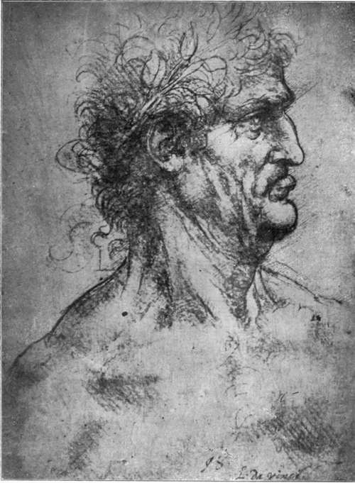

The Pictures. Part 12
Description
This section is from the book "Leonardo Da Vinci", by Edward McCurdy. Also available from Amazon: Leonardo Da Vinci.
The Pictures. Part 12
The deterioration had, therefore, begun previous to 1556, when Armenino saw it, and in the ten years between the date of his visit and that of Vasari its progress had been considerable.
In 1652 the monks cut away the portion containing the feet of Christ and of some of the Apostles, in order to make a new door into the Refectory.
In 1726 and 1770 it suffered from very drastic restoration.
In 1796 the orders of Bonaparte that no military quarters be established there and no damage be done were disregarded by the General left in command. The Refectory was used as a stable by the French soldiers, who pelted the Apostles with clods of clay, the traces of which are still visible on the walls. It was subsequently used by them as a magazine for storing hay.
During a great flood in 1800 the water stood over two feet deep in the Refectory and the painting became entirely covered with mould.
Seven years later, under the orders of Eugene Beau-harnais, Viceroy of Italy, the Refectory was dried, the floor raised, and the foundation of it strengthened as far as possible against the recurrence of damp.
As a result the condition of the painting gradually improved, and Goethe bears witness that parts of it became much more distinct.
Attempts were made in 1820 and 1854 to remove the work of the restorers of the preceding century which had probably been of some use in protecting the surface during its ill-usage.
1 " Tanto male condotto, che non si scorge piu se non una mac-chia abbagliata."
Its later history has been without incident. Imperceptibly but gradually the plaster disintegrates and falls away.
The commission to paint Madonna Lisa was given to Leonardo by Francesco del Giocondo, she being his third wife and a member of the Neapolitan family of the Gherardini.
No preparatory drawings are known to exist.
A half-length in black chalk of a nude at Chantilly is of the same figure, but lacks the quality of modelling of Leonardo's work, and the difference of pose forbids any direct connection with a study for the Louvre picture.
A drawing of hands at Windsor has, I think, been without reason connected with the picture.
The drawing is undoubtedly by Leonardo, but the position of the hands is entirely different; the greater angularity of the type of hand and the tightness of treatment suggest its date as of the first Florentine period or the early years at Milan.
The portrait was one of the first commissions after Leonardo's return to Florence, commenced according to Milanesi and M. Ravaisson-Mollien in 1500. Vasari speaks of his lingering over it for four years and leaving it unfinished; but as this period included his term of service under Caesar Borgia, he can only have worked on it intermittently. The picture, both Vasari and Lomazzo state, was acquired by Francis I., and was at Fontaine-bleau. Since then it has remained in the Royal Collection, ultimately the National Collection of the Louvre.
Cassiano del Pozzo described the picture in 1625 as in bad condition, but was enthusiastic about the beauty of the face and hands. He tells how the Duke of Buckingham, when sent as escort to bring Charles's bride Henrietta Maria to England, expressed a desire to have the picture, and how the King was only prevented from giving it to him by the remonstrances of those who considered that he would be sending out of the kingdom the most beautiful picture that he possessed. The marriage referred to took place in the same year as Cassiano del Pozzo's visit to Fontainebleau, and consequently the Duke of Buckingham's doings would be very recent gossip-which is the weightiest construction that the story will bear. As such it anticipates succinctly the consensus of opinion of later criticism. Indeed, the beauty of the picture is so stimulating, the art so supreme, as not readily to find utterance other than in terms of hyperbole. As M. Gruyer has said: "Voila quatre siecles bientot que Mona Lisa fait perdre la tete a tous ceux qui parlent d'elle, apres l'avoir longtemps regarded."
Of all his pictures it is carried farthest in degree of finish, and Vasari's statement as to its incompleteness can only mean that Leonardo was still unsatisfied, that he never gave it what were designedly the last touches.
The portrait, as offering a field freer in some respects than the defined figure compositions of sacred art, afforded in consequence a more single approach for the revelation of his individuality. The result is so unique as to convey no suggestion of comparison. There are no preparatory drawings, but the precepts laid down in passages of the "Trattato" almost seem in a special sense the preliminaries for it. It embodies in practice his investigations in the laws of aerial perspective, of the gradation of light and shade, and how that " they should blend without lines or borders in the manner of smoke."
Plate 38. Study Of A Head Crowned With Laurel
Philpot photo - Royal Gallery, Turin
This effect of softness of contour is the distinguishing characteristic of his later work.
In reading the passage on " the selection of such light as gives most grace to faces," which says that a portrait should be taken in dull weather or at dusk, and in which he speaks of noticing at such hour and with such conditions the peculiar grace and delicacy of the faces of men and women whom he passes in the street, do we not feel that this was the hour chosen? That just as to add a few touches he would go, Bandello says, at midday to the Refectory of the Grazie, so the hour at the fall of evening, when the light had a peculiar mystery of suggestion, was the hour at which he painted Mona Lisa?
She is represented sitting in front of a marble balcony. The left arm rests on the arm of the seat, and the fingers fold over the end of it. The right hand, perhaps the most perfect hand ever painted, lies lightly over the left hand and wrist. On sleeves and bodice the pleats of the satin dress take the light, and worked along the braid, as it were a sign manual of the artist, is one of the interlacing patterns such as occur on pages of the " Codice Atlantico."
Continue to:
Tags
leonardo da vinci, pictures, drawings, galleries, statues, da vinci